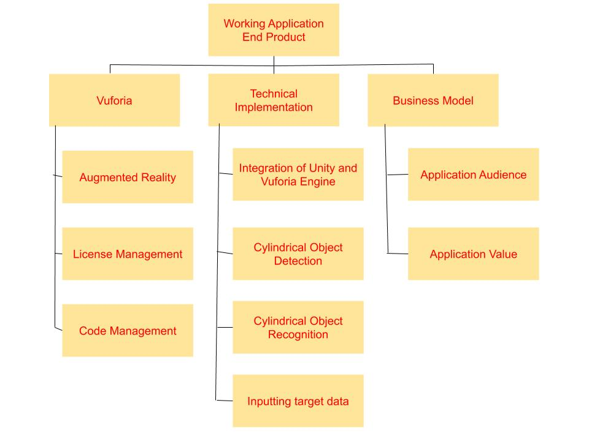

**Danfoss Scan Can App**

# General Project Overview ## Synopsis This project aims to utilize the power of augmented reality in order to build an application desgined to scan various soda cans and augment their nutritional information. The end product is an application designed in Vuforia using the Unity Engine. This application can be deployed to a device for a demonstration showing an augmented reality approach of identifying a can correctly out of 4 possible options in addition to displaying various information about the identified can, such as the price, calories, and sugar content. ## Overview The project overall consisted of several sprints designed to collect data, implement the framework of the Vuforia/Unity program, integrate the different elements, and deploy the project. The project definition was to develop an end product of an application designed in Vuforia using the Unity Engine. This application would be deployed to a device showing an augmented reality approach of identifying a can correctly out of 4 possible options in addition to displaying various information about the identified can, such as the calories and sugar content. The goals of the project were largely met as the team chose Vuforia/Unity framework, gathered targets, implemented the recognition process, and augmented various information about the 4 cans in a team-oriented work structure and breakdown. ## Goals and Objectives * Choose an augmented reality development software kit * Investigate Vuforia (alternative: Wikitude) * Set up an example working program * Modify the example program * Create a working application in Vuforia using the Unity engine in that can recognize 4 cans and augment various information about the cans * Establish a team-oriented work structure and breakdown ## Deliverables: * Register for a Vuforia Account * Register for a Vuforia license key (through Github) * Download Unity software * Install Vuforia Engine * Choose between cloud storage versus local storage of targets * Determined local storage as of the current state of the project) * Create a new Unity Project * Integrate the Vuforia Engine into the Unity Project * Set up a blank working project with an AR Camera with no targets * Find appropriate targets to the project * Add appropriate targets to the project * Choose between integrating an API for the cans’ data versus embedding fixed data * Perform GET requests from an API or insert text elements to input the cans’ information * Run simulations of the project * Build and run the application * Iterate over many trials to change elements, modify software, change targets, and change end deployment targets. * Establish a business model for the application * Record a demonstration video ## Project Work Breakdown Structure(WBS)

## Budget: Vuforia offers a free option with its corporate watermark for its augmented reality software development kit. This will account for all of the budget, thus there is an expected budget of $0 for a working end product with a watermark. # Basic Functionality The application is built using the Vuforia framework and the Unity engine. Targets of various soda can labels were utilized in a database in order for the system to recognize the different cans. The dimensions of these labels were scaled for best output and proper formatting. After recogntion, the nutritional information was augmented via a 2D text feature in order to associate certain sode cans with cartain information. # Documentation ## Assumptions * The user only wants nutritional information for 4 soda cans: Pepsi, Coca-Cola, Dr.Pepper, and 7UP. * The user is indifferent to drastic change of nutritional information. * The user identifies one can at a time. ## Design Choices The design choice of using Unity was made due to the many integrations that Unity provides in addition to the colloboration feature of the engine. The design choice of using Vuforia and not using Google AR, Wikitude SDK, and ARKit was made due to the efficient performance and usage of the cylinderical recogntion feature of the software development kit. In addition, handling of data was effective, secure, and easily scalable. The design choice of using 2D Text feature instead of a true 3D text feature was due to the inefficiency posed to the user when trying to decipher 3D text on a 2D screen, making it hard for users to understand the nutritional information among other screen camera content. ## Project Code The Github repository located here can offer various pieces of the Xcode software infrastructure. ## Challenges There were many challenges relating to the usage of soda can labels from the open source Internet platforms. To this effect, it was challenging to find the appropriate design, dimensions, and display of soda can labels. Therefore, the team created its own compatible versions of the input data of soda can labels. The cylindrical nature of cans in addition to the 2 dimensional nature of a computer screen with edited soda can labels was a challenging aspect of the cans and the proposed future path. Nevertheless, many trials and tests provided a clear optimal pathway to fix the issue of incompatibility of the soda cans. In addition to the soda cans, there were many challenges with the deployment of the application to a mobile Apple device, particularly due to the restrictive nature of Apple Xcode Program and the deployment process. After many trials, errors, and warnings, the usage of a mobile phone camera for the augmented reality application was realized. ## Successes: The successes of the project included the successful data collection of the soda can labels in order for the system to identify the 4 unique soda cans. In addition, the framework recognized each can with significant accuracy after many trials. The information was also displayed in a simple and systematic manner. The program was also further improvised with the better quality of a mobile device rather than a laptop camera interface. ## Other Video Demonstrations   # Frequent Asked Questions **Why is the augmented information not appearing some times?** There can be many external reasons why the application is not working optimally in some edge cases. One reasons is the lack of appropiate lighting in the room as this can cause the system to not recognize some distinguisable features of the soda can target. Another reason is the distance and potential orientation of the device and the camera as these factors can affect the quality of cylinderical target recognition. **What is the source of the nutritional information?** The sources for the nutrional information for the soda cans are from the respective corporate websites as these provide released accurate data. # Team Details ## Team Members * **Ashar Farooq MIT ‘23** * **Dawson Yapaolo FSU ‘23** ## Team Communication The team established a Slack chat in order to not miss team communications. In terms of the meeting times, the team worked in sprints through various weekends consisting of long meetings to work on deliverables. This is in addition to other Danfoss meetings and sessions.